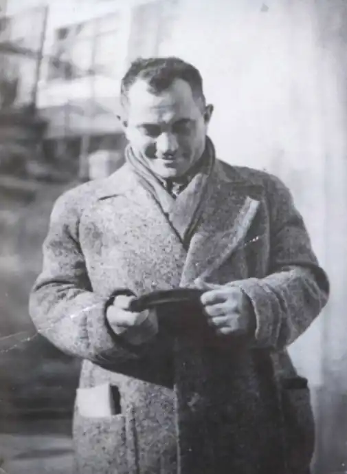

Ні для кого не секрет, що українська земля дала світові велетенську кількість особистостей, які своєю потужною творчою волею й обдаруванням збагачували і продовжують збагачувати всесвітню культуру, науку й цивілізацію. Не секрет і те, що часто ми, українці, нічого про цих людей не знаємо. Серед наших відомих у світі "незнайомців" є і Александер Гранах — визначний німецький, а згодом американський актор і блискучий письменник єврейського походження, який народився й виріс у Галичині.
Справжнє ім'я цієї людини — Єсая Гронах. На світ він з'явився 18 квітня 1890 року в селі Вербівці теперішнього Городенківського району Івано-Франківської області в бідній багатодітній єврейській родині. З раннього дитинства працював помічником пекарів у Городенці, Заліщиках, Станиславові (тепер Івано-Франківськ). У 1905 році, коли хлопцеві було чотирнадцять, він вперше побував у єврейському театрі Львова. Сцена так зачарувала його, що вже тоді юнак вирішив присвяти театрові своє життя і всупереч воєнним лихоліттям, схибленому часові, в якому жив, став таки геніальним актором найбільших берлінських сцен, а пізніше — одним із найкращих митців Голівуду.
Недовге життя Александра Ґранаха — він помер 14 березня 1945 року в Нью-Йорку після операції з видалення апендикса — було насичене подіями, багато з яких здаються неймовірними. У дванадцять років малий пекарчук втік з Городенки до Заліщиків, куди переїхала дівчина, яка йому подобалась. Через рік він опинився у Станиславові. Після невдалого страйку пекарів Ґранаха звільнили з пекарні, на якій він працював, і хлопець знайшов притулок у борделі на вулиці Зосина воля. За житло платив тим, що перед сном читав неписьменним працівницям романи й писав листи їхнім рідним. Тут здобув свій перший чоловічий досвід, перебуваючи під опікою однієї з дівчат, яку, до речі, відвідав через роки, уже будучи актором. Від брата зі Львова шістнадцятилітній Гранах утік до Берліна, де працював пекарем й лакувальником домовин, граючи у народному єврейському театрі. Завдяки допомозі відомого німецького майстра слова Еміля Мілана, який став учителем Ґранаха, молодий галичанин був зачислений у знамениту школу театрального мистецтва Макса Райнгарда. Заради омріяної професії він бездоганно оволодів німецькою, змінив ім'я, зважився на операцію, яка полягала в тім, щоб поламати здорові, але криві ноги, які псували його амплуа драматичного актора. Операція була надзвичайно болючою, та все ж успішною. Однак її результати знадобилися Ґранахові нескоро, оскільки почалася Перша світова війна і він, як громадянин Австро-Угорської імперії, змушений був повернутися в Галичину й мобілізуватися на фронт. Карми мандрівника, а точніше — втікача, Александер Гранах не зміг позбутися протягом усього життя. Під час війни він потрапив в італійський полон, де організовував театральні вистави й звідки йому дивом вдалося втекти через Альпи до Швейцарії. Дорогою познайомився із хорваткою Мартою, з якою розмовляв українською. Згодом йому знову довелося втікати — цього разу від нацистського режиму — спочатку в СРСР, потім у Швейцарію і нарешті в США Справжня театральна кар'єра Ґранаха розпочалася в Мюнхені, де 1918 року він отримує омріяну роль Шейлока в постановці драми Шекспіра "Венеціанський купець". У 1921 році актор знову повертається до Берліна, грає в Театрі Лессінґа, а також у німих фільмах (Юду в фільмі "INRI", легіонера у фільмі "Втеча в чужий легіон", другорядну, але виразну роль у фільмі про графа Дракулу "Носферату" та ін.). У 1930 році Гранах відвідав свою улюблену Галичину, побував у Городенці, Станиславові, Коломиї, а 1934-1936 роки провів у Радянському Союзі, зігравши дві ролі в радянському кіно (ватажка циганського табору в фільмі "Останній табір" та Георгія Дімітрова у фільмі "Борці"). Окрім того, в ці роки Александер Гранах грав Шейлока у Київському єврейському театрі. У 1937 році в Києві Гранах був заарештований за звинуваченням у шпигунстві й вісімнадцять днів провів у в'язниці. Уникнути сталінських таборів йому допомогло втручання Леона Фойхтванґера, який звернувся особисто до Сталіна. Александер Гранах негайно виїхав до Швейцарії, до своєї супутниці життя Лоти Лівен. Останньою роботою актора в Європі стала 1938 року головна роль у постановці "Макбет" в одному з провідних театрів Цюриха. Того ж року зі Швейцарії Гранах емігрує до США. Йому довелося вдруге подолати мовний бар'єр, вивчаючи англійську. Свою акторську кар'єру він розпочав заново — уже в Голівуді. Завдяки ролі агента КДБ Копальського у відомому фільмі "Ніночка" (1939), головну роль в якому зіграла Грета Гарбо, Александер Гранах став знаменитим, так би мовити, вдруге. Тут йому знадобився досвід перебування в СРСР, де він мав змогу спостерігати за партійними функціонерами й агентами радянських спецслужб. Став у пригоді й досвід життя в нацистській Німеччині — у ранніх сорокових в Голівуді знімалося багато антифашистських стрічок. В одному з таких фільмів, що 1944 року був знятий за романом Анни Зеґерс "Сьомий хрест", Гранах блискуче зіграв роль наглядача концтабору. Александер Гранах подолав величезну відстань — від сина убогих галицьких євреїв до справжнього майстра театру і кіно у світовому вимірі. Не в останню чергу це вдалося завдяки його досвіду чужинця, який всюди вміє бути як дома, який не відмежовується від незвичного середовища, а опановує це середовище, робить його своїм. Зі спогадів сучасників та з автобіографічного роману Александер Гранах постає людиною привабливою, дотепною, чарівливою, що вміє легко знаходити друзів і налагоджувати взаємини. А непересічний досвід дитинства в Галичині впливав не лише на приватне життя актора, але й надавав масштабності його грі. Не так уже й мало людей, чиє життя могло б стати сюжетом для захопливого пригодницького роману. Та Александер Гранах не лише прожив таке життя, він блискуче відтворив його у вражаючому автобіографічному романі "Ось іде людина" (Da geht ein Mensch), який почав писати на початку сорокових років. Сучасний німецький письменник Петер Ґертлінґ так відгукується про твір Ґранаха: "Ця книжка — одна із найзначніших автобіографій, що написані німецькою мовою. Вона мудра й бунтівна, сумна, але й повна прихованого дотепу. Хто прочитає цю книжку, неодмінно зачислить її в ряд тих, до яких хочеться повертатися протягом цілого життя". Мій власний читацький досвід підтверджує, що Ґертлінґ має рацію. До книжки хочеться повертатися, бо вона справді "збагачує й ощасливлює ". Цей твір простий, а водночас глибокий, його людяність перевершує всі формальні засоби й прийоми, його історії хочеться переповідати, його одкровення ще довго вібрують у свідомості. (От, наприклад, таке: "Між селом Вербівці й містечком Городенка різниця була більшою, ніж між містечком Городенка і будь-якою європейською столицею. Адже Городенка уже мала всі ознаки непевного, метушливого, сповненого конкуренції міста, тоді як Вербівці були спокійним, стабільним і мирним селом "). Крім надзвичайної естетичної і етичної вартости роман Ґранаха має ще одну важливу перевагу — це чудовий історичний документ, в якому детально й дотепно відображені повсякденні реалії тодішнього середовища Галичини, взаємини різних етносів а ще — будні Першої світової війни. Побут наших містечок, де до Другої світової війни жили разом українці, поляки, євреї, вірмени, переломлюється в творі, мов у кристалі. Найвищий час подарувати цей кристал українському читачеві.